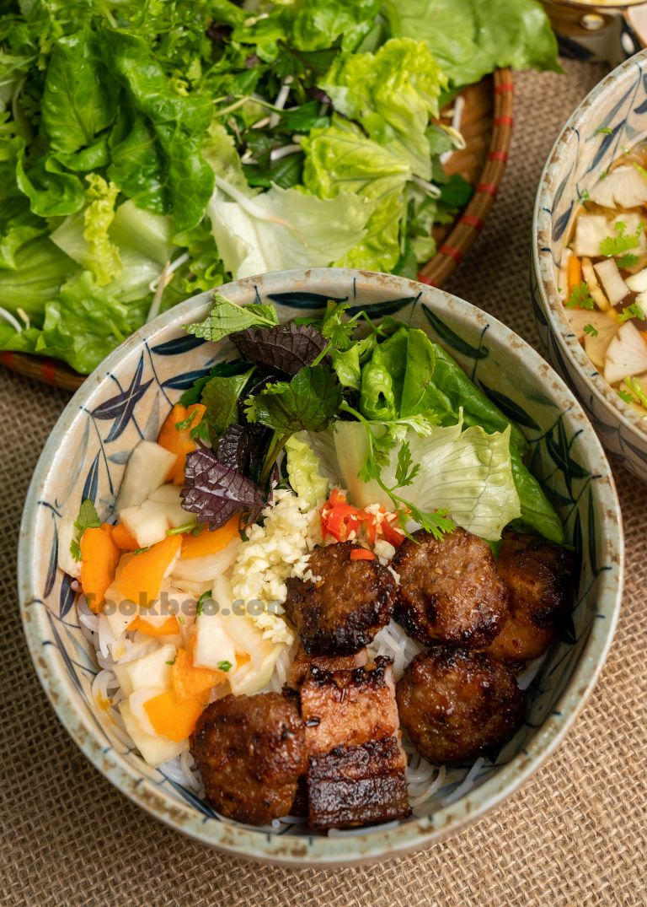

Description
Bún Chả is one of Vietnam's most beloved traditional dishes, originating from Hanoi.
It features smoky grilled pork served with rice noodles, fresh herbs, and a light, tangy dipping sauce made with fish sauce, vinegar, sugar, and garlic.
Known for its perfect balance of savory, sweet, sour, and fresh flavors, Bún Chả offers an authentic taste of
Vietnamese cuisine and is enjoyed by locals
and visitors alike as a satisfying lunch or dinner.
Ingredients
- 500g pork belly, thinly sliced
- 200g rice vermicelli noodles
- Fresh herbs (mint, cilantro, perilla leaves)
- 1 cucumber, thinly sliced
- 1 carrot, julienned
- 2 cloves garlic, minced
- 2 tablespoons sugar
- 3 tablespoons fish sauce
- 2 tablespoons vinegar
- 1 cup water
- 1 teaspoon chili flakes (optional)
Instructions
- Marinate the pork belly slices with a mixture of minced garlic, sugar, fish sauce, and a pinch of chili flakes. Let it sit for at least 30 minutes.
- Grill the marinated pork belly over medium heat until cooked through and slightly charred, about 3-4 minutes per side.
- Cook the rice vermicelli noodles according to package instructions, then rinse with cold water and drain.
- Prepare the dipping sauce by mixing fish sauce, vinegar, sugar, and water in a bowl until the sugar dissolves. Adjust to taste.
- To serve, place a portion of noodles in a bowl, top with grilled pork, fresh herbs, cucumber, and carrot. Serve with the dipping sauce on the side.
Home